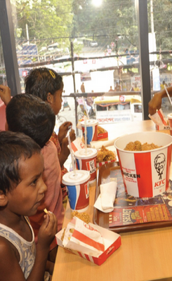
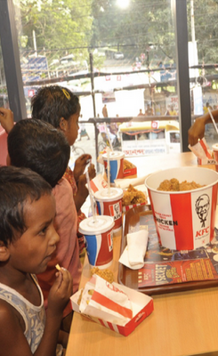

Weaving Dreams
Basic literacy
Vocational Training
Health & Hygiene

Psychology

creativity

Human Values
KFC Shopner Pathshala is a project designed to provide underprivileged street-bound children with basic education, vocational training and a safe environment to learn and grow. Each morning, the restaurants are transformed into classrooms where the children are taught with basic literacy in Bangla and English, as well as health and hygiene, psychological aspects and creativity. The school aims to build character and prepare the children for a brighter future. With the support of LEEDO and Mojar School, KFC is committed to providing a nurturing environment where every child can chase their dreams and make something of their life.
Basic literacy
Vocational Training
Health & Hygiene
Psychology
creativity
Human Values
Outside of the class curriculum, the children are taught how to introduce themselves and how to read books. They also sing, dance, recite poetry, and play games like ludo, carrom and puzzles with other kids. This teaches the kids beyond the books, where they get introduced to a world where their worries about day-to-day struggles fade away. Lastly, they are provided with food during classes so that they don't have to deal with hunger at all while learning. But the main reason behind these activities is that these kids enjoy learning and have multiple reasons to continue learning.

 
